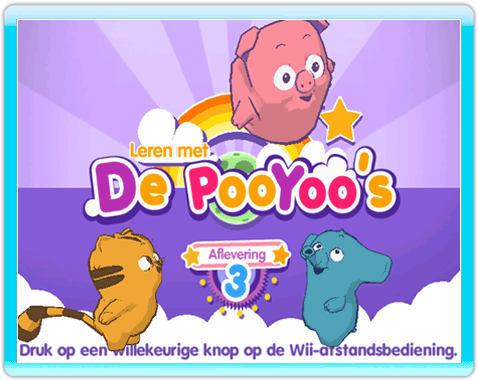
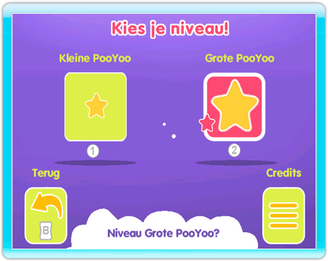
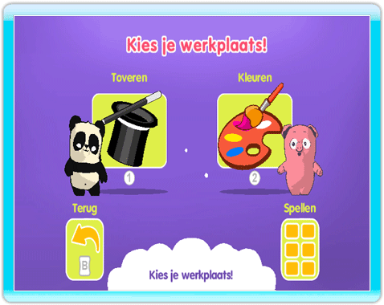
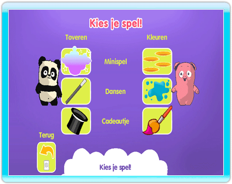

-
Een spel beginnen
Wijs op het kanaalscherm op BEGINNEN en druk op de A-knop om het spel te beginnen en naar het titelscherm te gaan.
-
Titelscherm
Druk op een knop om de wereld van de PooYoo's te betreden.

-
Leerniveau
Kies eerst het leerniveau voor je kind. Kleine PooYoo voor jonge kinderen en Grote PooYoo voor al wat oudere kinderen. Kies met de aanwijzer een afbeelding en druk op de A-knop om je keuze te bevestigen. Je kunt ook het leerniveau kiezen met de 1-knop of 2-knop. De 1-knop voor Kleine PooYoo en de 2-knop voor Grote PooYoo.

-
Werkplaats kiezen
Zodra je het leerniveau gekozen hebt, kom je in het menu Werkplaats kiezen terecht. Kies met de aanwijzer een werkplaats en druk op de A-knop om te beginnen. Je kunt een werkplaats ook kiezen door op de 1- knop te drukken om de toverwerkplaats te beginnen of op de 2-knop om de kleurenwerkplaats te beginnen.

-
Activiteit kiezen
Als je kind een bepaalde activiteit wil spelen, richt dan de controller op het Spel-pictogram rechts onderin het scherm en druk op de A-knop om naar het Spel Keuze Menu te gaan.
